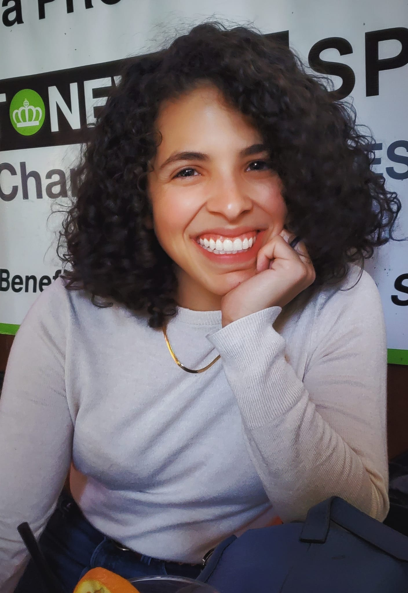
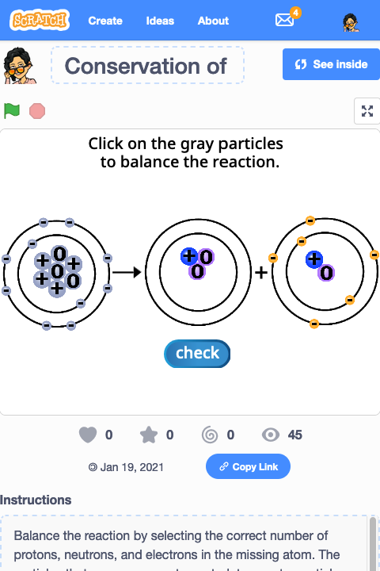
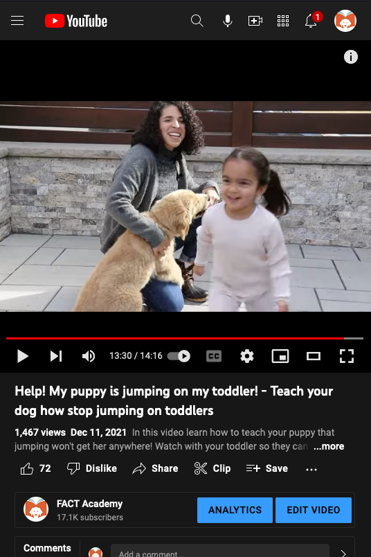
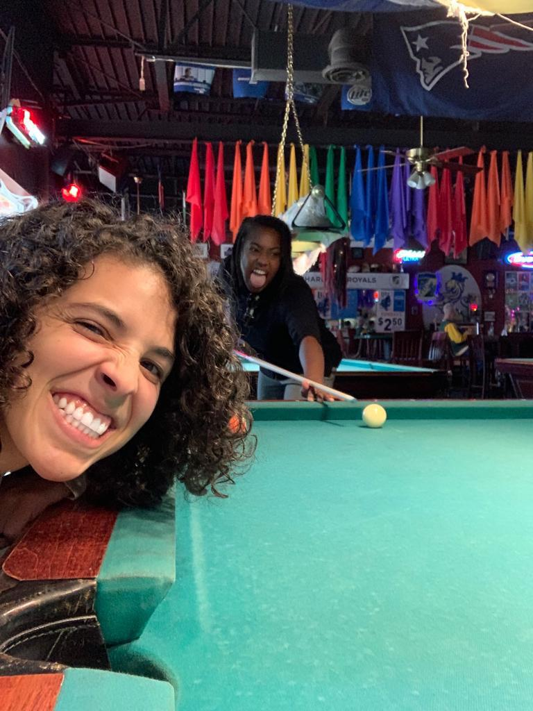

Hi, I'm Adriana. I am a mom to a brilliant little girl, a collector of experiences,
a daredevil, a proud Latina, and more. I love learning anything at all, but revel most
in the logic and truth to be found in the natural sciences and in coding. While I do spend
time thinking about the ethereal, I focus my attention and actions on learning as much as
I can about the things I can observe. I thrill in all types of challenges, both physical and mental.
My coding journey began in 2020 when I became a public high school teacher. I taught during
the first year of the pandemic, and was fully remote for 75% of the school year. Online simulations were
helpful, but many features I needed were missing from the available tooks.
After spending countless hours scouring the internet, I finally decided to make my own simulations and
exercizes. I used Scratch by MIT and was able to create a multitude of tools that were then adopted in
the other chemistry classroom. Check out
my SCRATCH projects! These tools were game changers for me and my students; engagement skyrocketed
as well as performance on assessments.
Finding that I greatly enjoyed coding, I took a couple of classes from MIT's open courseware and learned
the basics of Python and computational thinking. I have since been able to combine the skills I learned
in those classes with the bit of HTML and CSS that I had learned from creating online courses.

I was a dog trainer for many years before I began teaching. In addition to teaching 1-on-1 and
group lessons, I created a YouTube channel called FACT Academy that now has over 17,000 subscribers. While the time I have
available to work on it, I do still upload videos a few times per year. My most popular video is about 30K
views away from reaching 1 million!
I use force-free and science-based methodology, and particularly love a technique
called free-shaping, which is used to train zoo animals and marine mammals completely contact-free.
Here is a video of me free-shaping one of my dogs in case you are curious!


I like to play pool these days. A year ago I tried playing billiards and fell in love! My favorite
haunt is a gay sports bar with four pool tables. I go during my spare time and love chatting with the
employees and shooting pool for a couple of hours. Competitiveness is in my nature, but I'm happy playing
whether I win or lose.
As an extrovert, I love making impromptu friends with players at nearby tables, and have had many interesting
conversations and experiences as a result. One time we were given VIP tickets from a person who ended up
being the stage manager for a human circus show!